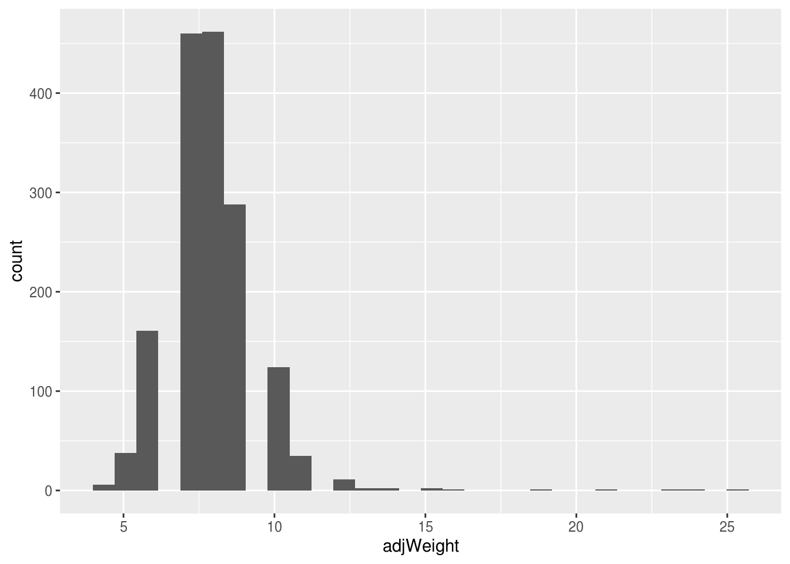

Lesson objectives
- Learn how to apply and interpret linear regression for a variety of data
- Understand probability and the importance of presenting confidence intervals
- Learn the importance of visualizing your data when doing any analyses or statistics
Lesson outline
- Basic descriptive and inferential statistics (20 min)
- Generalized linear models (50-60 min)
- Linear regression
- ANOVA
- Logistic regression
Load appropriate libraries
If you need to re-download the survey data
# download.file("https://ndownloader.figshare.com/files/2292169", "survey.csv")
# survey <- read_csv("survey.csv")Load the data and change all character vectors into factors
## Parsed with column specification:
## cols(
## record_id = col_double(),
## month = col_double(),
## day = col_double(),
## year = col_double(),
## plot_id = col_double(),
## species_id = col_character(),
## sex = col_character(),
## hindfoot_length = col_double(),
## weight = col_double(),
## genus = col_character(),
## species = col_character(),
## taxa = col_character(),
## plot_type = col_character()
## )Theoretical models are powerful tools for explaining and understanding the world. However, they are limited in that the real-world often doesn’t perfectly fit these models. The real world is messy and noisy. We can’t always blindly trust our data as there are inherent biases and errors in it. Measuring it, collecting it, recording it, and inputting it are some of the possible sources of error and bias. We use statistics and probability to determine whether the way we understand and conceptualize the world (as models) matches reality (even with the error and bias).
A reason we use statistical methods in R compared to writing up the formulas and equations ourselves is that we can focus on answering questions without worrying about whether we are doing the math or computation wrong. This is of course dependent on the type of research questions you may be interested in (e.g. for more theoretical questions, doing the math and computation yourself is probably a goal!) and on the type of data you are using/collecting. There is a lot of complexity that has already been taken care of in the available R packages and functions. For example, the function lm that we will use in this lesson uses the ordinary least squares (OLS) method, which is a common method for determining fit for linear models. That way, you can answer your research questions and not worry too much about the exact math involved and instead worry about the specifics of your field (e.g. Are you measuring the right thing? Are you collecting the right data? Are you asking the right questions? Is there an ecological or biological aspect you are missing in your analysis?).
This is simply a way to numerically describe patterns in data, very similar to the visual descriptions we made last lecture. It summarises information and can facilitate comparisons among and within experimental conditions. The distribution properties we discussed (averages, spread, skew, kurtosis) fall under this umbrella.
Often, the dplyr function summarise() is very helpful for creating these descriptions.
Base R’s table() function displays counts of identical observations for either a single data vector or a dataframe. With the survey data, we can see how many records there are for a given genus (such as Dipodomys). This is the ‘single data vector’ case.
##
## Ammodramus Ammospermophilus Amphispiza Baiomys
## 2 437 303 46
## Calamospiza Callipepla Campylorhynchus Chaetodipus
## 13 16 50 6029
## Cnemidophorus Crotalus Dipodomys Lizard
## 2 2 16167 4
## Neotoma Onychomys Perognathus Peromyscus
## 1252 3267 1629 2234
## Pipilo Pooecetes Reithrodontomys Rodent
## 52 8 2694 10
## Sceloporus Sigmodon Sparrow Spermophilus
## 6 233 4 249
## Sylvilagus Zonotrichia
## 75 2## [1] 16167We can also provide two different variables from the same data set to cross tabulate the number of records that have each value. Looking for the intersection of values: how many records have the genus “Baiomys” and also are labelled with the taxa “rodent”?
##
## Bird Rabbit Reptile Rodent
## Ammodramus 2 0 0 0
## Ammospermophilus 0 0 0 437
## Amphispiza 303 0 0 0
## Baiomys 0 0 0 46
## Calamospiza 13 0 0 0
## Callipepla 16 0 0 0
## Campylorhynchus 50 0 0 0
## Chaetodipus 0 0 0 6029
## Cnemidophorus 0 0 2 0
## Crotalus 0 0 2 0
## Dipodomys 0 0 0 16167
## Lizard 0 0 4 0
## Neotoma 0 0 0 1252
## Onychomys 0 0 0 3267
## Perognathus 0 0 0 1629
## Peromyscus 0 0 0 2234
## Pipilo 52 0 0 0
## Pooecetes 8 0 0 0
## Reithrodontomys 0 0 0 2694
## Rodent 0 0 0 10
## Sceloporus 0 0 6 0
## Sigmodon 0 0 0 233
## Sparrow 4 0 0 0
## Spermophilus 0 0 0 249
## Sylvilagus 0 75 0 0
## Zonotrichia 2 0 0 0Would you expect to see one genus with counts in two different taxa columns? Why or why not?
Create a plot that shows the number of records for each genus.
There are some unexpected genus values in the table: what are they?
How can you count the number of records for each genus using dplyr()?
The dplyr summarise() function is extremely customizable. You can use it to summarise the averages (mean, median, and mode), standard deviation, inter- quartile range, and counts of a data set. It can also provide you with the min and max value. Its documentation page lists is many outputs: https://dplyr.tidyverse.org/reference/summarise.html
Several of these summary functions (mean, sd, etc. that you can apply within your call to summarise) will not work as you expect if there are any missing values. You may need to pass “na.rm=TRUE” in order to obtain the summary value.
survey %>%
summarise(mean=mean(hindfoot_length, na.rm=TRUE),
count=n(),
unqiue=n_distinct(hindfoot_length),
median=median(hindfoot_length, na.rm=TRUE),
min=min(hindfoot_length, na.rm=TRUE),
max=max(hindfoot_length, na.rm=TRUE),
sd=sd(hindfoot_length, na.rm=TRUE),
IQR=IQR(hindfoot_length, na.rm=TRUE))## # A tibble: 1 x 8
## mean count unqiue median min max sd IQR
## <dbl> <int> <int> <dbl> <dbl> <dbl> <dbl> <dbl>
## 1 29.3 34786 57 32 2 70 9.56 15When you think that categorical factors (such as sex, genus) will have an impact on your dependent variable, it’s important to group_by() those factors so you can compare the variable’s value among each of the categories.
# To avoid na.rm calls, let's temporarily ignore any missing weight data
weightHere <- survey %>%
filter(!is.na(weight))
weightHere %>%
group_by(genus) %>%
summarise(mean=mean(weight),
count=n(),
sd=sd(weight))## # A tibble: 10 x 4
## genus mean count sd
## <fct> <dbl> <int> <dbl>
## 1 Baiomys 8.6 45 2.08
## 2 Chaetodipus 24.2 5844 9.11
## 3 Dipodomys 55.9 15510 29.4
## 4 Neotoma 159. 1152 44.0
## 5 Onychomys 26.5 3136 6.32
## 6 Perognathus 8.38 1579 3.69
## 7 Peromyscus 21.5 2172 4.46
## 8 Reithrodontomys 10.7 2620 2.27
## 9 Sigmodon 67.3 223 25.9
## 10 Spermophilus 93.5 2 51.6Create a plot that visualizes the median and IQR of the summarised weightHere data (grouped by genus).
Recall another way we dealt with missing values. Use this method to create a newWeightHere table and compare the values.
Create another version of Q1’s plot with the newWeightHere data and compare. Explain why the plots differ. Hint: try incorporating taxa into your plot.
Based on Q3, what kinds of predictions can you make with this data?
Descriptive statistics is describing the data you collected from a representative sample of your true population. If you want to ask questions about weight differences between Perognathus flavus males and females, you can’t just stop at the point where you’ve generated medians for the two groups. This is just a statement about the samples you’ve taken.
You’ve indubitably learned about t-tests in your past stats class(es). Hopefully, the extreme importance of validating the assumptions of a given statistical test has been etched upon your brain in indelible ink. Because t-tests are parametric, it’s important that your data is normally distributed.
With a one-sample t-test, you’re asking whether the mean of your sample differs significantly from a mean value that you expect it to have. You might want to use this if you have an expected population mean value from the literature. You may have even amassed your own dataset that you think is representative of a population’s true mean & you want to compare a newly collected sample.
With our survey data, we might want to test whether the 2002 mean weight of Perognathus flavus differs from what we believe the true population mean to be. Our null hypothesis is that the 2002 mean does not differ significantly from the population mean. Our alternative hypothesis is that it is significantly different.
# Filter the survey data for only the Perognathus flavus data
flavusOnly <- survey %>%
filter(species=="flavus") %>%
# create an adjusted weight variable that will hold the calculated median
# weight if the unadjusted weight == NA & the original weight value otherwise
mutate(adjWeight =
if_else(is.na(weight), median(weight, na.rm=TRUE), weight))
#verify that you didn't get a different genus with the same species name
table(flavusOnly$genus) #remember you can use table() to view unique values##
## Ammodramus Ammospermophilus Amphispiza Baiomys
## 0 0 0 0
## Calamospiza Callipepla Campylorhynchus Chaetodipus
## 0 0 0 0
## Cnemidophorus Crotalus Dipodomys Lizard
## 0 0 0 0
## Neotoma Onychomys Perognathus Peromyscus
## 0 0 1597 0
## Pipilo Pooecetes Reithrodontomys Rodent
## 0 0 0 0
## Sceloporus Sigmodon Sparrow Spermophilus
## 0 0 0 0
## Sylvilagus Zonotrichia
## 0 0# Test whether the weight data is normally distributed
#quick visual check using a histogram
ggplot(flavusOnly, aes(x=adjWeight)) +
geom_histogram()## `stat_bin()` using `bins = 30`. Pick better value with `binwidth`.
# Shapiro-Wilk's test: does the distribution differ significantly from normal
shapiro.test(flavusOnly$adjWeight)##
## Shapiro-Wilk normality test
##
## data: flavusOnly$adjWeight
## W = 0.81435, p-value < 2.2e-16##
## Shapiro-Wilk normality test
##
## data: flavusOnly$weight
## W = 0.81676, p-value < 2.2e-16With a p-value << 0.05 can reject the null hypothesis of the Shapiro-Wilk’s test, so our weight data is not normally distributed. We’re going to ignore that for the purposes of instruction, but do not do this at home!!
# Calculate the estimated true population mean (from the years before 2002)
flavusOnly %>%
filter(year<2002) %>%
summarise(mean=mean(adjWeight)) #evaluates to 7.9 (sig figs!)## # A tibble: 1 x 1
## mean
## <dbl>
## 1 7.93# Extract the measurements taken during 2002 and put in a new data frame
newest <- flavusOnly %>%
filter(year==2002)
# Test
t.test(newest$adjWeight, mu=7.9) #note it's not a double ==##
## One Sample t-test
##
## data: newest$adjWeight
## t = -1.8943, df = 17, p-value = 0.07533
## alternative hypothesis: true mean is not equal to 7.9
## 95 percent confidence interval:
## 6.819617 7.958161
## sample estimates:
## mean of x
## 7.388889Based on a p-value of 0.05, we fail to reject the null hypothesis. It is important to report your results with appropriate notation so your readers can understand how much credence to lend to your conclusions.
The weight of Perognathus flavus individuals sampled in 2002 does not differ significantly from the general population one-sample t17 = -1.89, p=0.075.
What are the assumptions of a one-sample t-test? Recall from past classes or ask the almighty Google.
How can you extract the year==2002 weight values and perform a t.test using one line of code?
Test whether the flavus hindfoot_length data from 2001 differs from your calculated population mean (be sure to test for normality!). Report your results using appropriate notation.
Compare two independent sample means against each other. With our survey data, we might want to test whether males have a significantly different mean weight than females.
There are two assumptions we have to test now (once we’ve determined that the two samples we’re looking at are independent):
The dependent variable must be normally distributed in both samples
The variance of the dependent variable must be approximately equal between the two samples
##
## Shapiro-Wilk normality test
##
## data: subset(flavusOnly, sex == "M")$weight
## W = 0.77414, p-value < 2.2e-16##
## Shapiro-Wilk normality test
##
## data: subset(flavusOnly, sex == "F")$weight
## W = 0.85419, p-value < 2.2e-16##
## F test to compare two variances
##
## data: weight by sex
## F = 1.037, num df = 15302, denom df = 16878, p-value = 0.02139
## alternative hypothesis: true ratio of variances is not equal to 1
## 95 percent confidence interval:
## 1.005397 1.069579
## sample estimates:
## ratio of variances
## 1.036979Our data fails both of these tests, but we’re going to pretend everything is fine… again, do NOT do this at home!!
##
## Welch Two Sample t-test
##
## data: weight by sex
## t = -2.0226, df = 31751, p-value = 0.04312
## alternative hypothesis: true difference in means is not equal to 0
## 95 percent confidence interval:
## -1.62412287 -0.02552529
## sample estimates:
## mean in group F mean in group M
## 42.17055 42.99538Would you want to compare the sample rodent mean weight against the mean sample weight of Perognathus flavus? What about rodent mean weight against rodent mean hindfoot_length?
Repeat this t-test between males and females, but compare mean hind foot length instead of mean weight (be sure to test for normality!). Report your results using appropriate notation.
Compare the mean values of a dependent variable between two categories that were paired by design. You can’t do this for males and females in our survey data set because the measurements weren’t taken at the same time, in the same place, from one male and one female that were ostensibly similar in all other respects.
However, this test would be appropriate if you wanted to compare the mean reaction time of the right and left hands from a sample of undergrads.
Bivariate correlation (r) gives us the strength and direction of relationship between two variables (linear). Say we find that the correlation (\(r\)) between hindfoot length and weight is \(r\) = .609. This means that .6092^2 = .371 of the variance in \(y\) (hindfoot length) is common to the variance in \(x\) (weight). Alternatively, we can say that these two variables share 37.1% of the variance in common. In the case of the Pearson correlation, this will be true whether we consider weight or hindfoot length to be the dependent variable.
##
## Pearson's product-moment correlation
##
## data: survey$weight and survey$hindfoot_length
## t = 164.3, df = 30736, p-value < 2.2e-16
## alternative hypothesis: true correlation is not equal to 0
## 95 percent confidence interval:
## 0.6778151 0.6897195
## sample estimates:
## cor
## 0.6838128A version of GLM that uses continuous \(y\) values is called linear regression, which I’m going to focus on. The formula for linear regression (or GLM in general) is:
\[ Y = \alpha + X\beta + \varepsilon \]
Or, a simplified, alphabetized version is:
\[ y = a + Xb + e \]
Where \(a\) is the intercept (where the line crosses the vertical, i.e. y, axis of the graph), \(X\) is the predictor variable, \(b\) is the slope/coefficient, and \(e\) is the error term.
We construct these regression models for several reasons. Sometimes we want to infer how some variables (\(x\)) cause or influence another variable (\(y\)). Or maybe we know that \(y\) has a lot of error in the measurement or is difficult to measure, so we want to derive a formula in order to predict \(y\) based on more accurately measured variables. In R we can run linear regression either using lm or using glm(). lm() assumes a Gaussian (normal) distribution of your data. On the other hand, when you use glm() in R, you can specifiy the data’s distribution with the parameter model =. This allows you to construct a linear model when your data don’t follow a Gaussian distribution.
Regression requires a predictor (independent) variable and a predicted (dependent) variable. Changing which variable is the predictor/predicted gives you a different regression line with a different regression equation. The function we are going to use today, lm, uses the OLS method by default, as mentioned above. The least squares line is the line chosen by lm to fit your data. The goal of OLS is to choose a line that minimizes prediction error. With any other line, errors of prediction would be greater. Note, the best fitting model given your data (i.e. OLS) does not equal the best model period. We must pay attention to fit statistics like R^2, the amount (%) of variance in the outcome explained by our predictor (i.e., model), to determine how well our model is doing.
So how do we use these functions? In R, dependent variables are predicted by a tilde \(~\). The formula to regress \(y\) on \(x\) is y ~ x:
##
## Call:
## lm(formula = weight ~ sex, data = survey)
##
## Residuals:
## Min 1Q Median 3Q Max
## -38.995 -22.171 -5.995 5.005 237.005
##
## Coefficients:
## Estimate Std. Error t value Pr(>|t|)
## (Intercept) 42.1706 0.2951 142.917 <2e-16 ***
## sexM 0.8248 0.4074 2.024 0.0429 *
## ---
## Signif. codes: 0 '***' 0.001 '**' 0.01 '*' 0.05 '.' 0.1 ' ' 1
##
## Residual standard error: 36.5 on 32180 degrees of freedom
## (2604 observations deleted due to missingness)
## Multiple R-squared: 0.0001273, Adjusted R-squared: 9.627e-05
## F-statistic: 4.098 on 1 and 32180 DF, p-value: 0.04293#multiple predictors with interaction terms
result <- lm(weight~sex*hindfoot_length, data=survey)
summary(result)##
## Call:
## lm(formula = weight ~ sex * hindfoot_length, data = survey)
##
## Residuals:
## Min 1Q Median 3Q Max
## -96.687 -12.919 -4.031 3.259 229.889
##
## Coefficients:
## Estimate Std. Error t value Pr(>|t|)
## (Intercept) -32.042646 0.692255 -46.287 <2e-16 ***
## sexM -1.816600 0.959032 -1.894 0.0582 .
## hindfoot_length 2.558271 0.022894 111.746 <2e-16 ***
## sexM:hindfoot_length 0.003292 0.031264 0.105 0.9161
## ---
## Signif. codes: 0 '***' 0.001 '**' 0.01 '*' 0.05 '.' 0.1 ' ' 1
##
## Residual standard error: 26.02 on 30672 degrees of freedom
## (4110 observations deleted due to missingness)
## Multiple R-squared: 0.4678, Adjusted R-squared: 0.4678
## F-statistic: 8989 on 3 and 30672 DF, p-value: < 2.2e-16#use + for main effect of predictor only
result <- lm(weight~sex + hindfoot_length, data=survey)
summary(result)##
## Call:
## lm(formula = weight ~ sex + hindfoot_length, data = survey)
##
## Residuals:
## Min 1Q Median 3Q Max
## -96.749 -12.907 -4.028 3.253 229.893
##
## Coefficients:
## Estimate Std. Error t value Pr(>|t|)
## (Intercept) -32.09337 0.49714 -64.556 < 2e-16 ***
## sexM -1.72062 0.29787 -5.776 7.7e-09 ***
## hindfoot_length 2.56004 0.01559 164.202 < 2e-16 ***
## ---
## Signif. codes: 0 '***' 0.001 '**' 0.01 '*' 0.05 '.' 0.1 ' ' 1
##
## Residual standard error: 26.02 on 30673 degrees of freedom
## (4110 observations deleted due to missingness)
## Multiple R-squared: 0.4678, Adjusted R-squared: 0.4678
## F-statistic: 1.348e+04 on 2 and 30673 DF, p-value: < 2.2e-16ANOVA is simply a different way of evaluating explained variance in linear modelling. Anova is a special case of linear modelling. You must always wrap the anova() function around a lm() function.
## Analysis of Variance Table
##
## Response: weight
## Df Sum Sq Mean Sq F value Pr(>F)
## sex 1 5461 5461 10.801 0.001016 **
## genus 9 26567752 2951972 5839.067 < 2.2e-16 ***
## sex:genus 9 48457 5384 10.650 < 2.2e-16 ***
## Residuals 32162 16259676 506
## ---
## Signif. codes: 0 '***' 0.001 '**' 0.01 '*' 0.05 '.' 0.1 ' ' 1However, R uses type II sums of squares by default. Anova() from the car package can give you “Type III Sums of Squares”. This matters when you have more than one predictor (e.g. taxa x sex). Asking for type III sums of squares will match what you get from SPSS or SAS.
## Anova Table (Type III tests)
##
## Response: weight
## Sum Sq Df F value Pr(>F)
## (Intercept) 2602 1 5.1464 0.0233 *
## sex 31 1 0.0621 0.8032
## genus 13368626 9 2938.1598 <2e-16 ***
## sex:genus 48457 9 10.6498 <2e-16 ***
## Residuals 16259676 32162
## ---
## Signif. codes: 0 '***' 0.001 '**' 0.01 '*' 0.05 '.' 0.1 ' ' 1R comes with a default pairwise t-test (pairwise.t.test()). However, multcomp offers more posthoc options than base R:
result <- lm(weight~genus, data=survey)
postHocs<-glht(result, linfct = mcp(genus = "Tukey"))
#summary function gives results of multiple comparisons
summary(postHocs)## Warning in RET$pfunction("adjusted", ...): Completion with error > abseps##
## Simultaneous Tests for General Linear Hypotheses
##
## Multiple Comparisons of Means: Tukey Contrasts
##
##
## Fit: lm(formula = weight ~ genus, data = survey)
##
## Linear Hypotheses:
## Estimate Std. Error t value Pr(>|t|)
## Chaetodipus - Baiomys == 0 15.5793 3.3770 4.613 < 0.001 ***
## Dipodomys - Baiomys == 0 47.2602 3.3689 14.028 < 0.001 ***
## Neotoma - Baiomys == 0 150.6457 3.4291 43.931 < 0.001 ***
## Onychomys - Baiomys == 0 17.8962 3.3881 5.282 < 0.001 ***
## Perognathus - Baiomys == 0 -0.2225 3.4117 -0.065 1.00000
## Peromyscus - Baiomys == 0 12.8563 3.3987 3.783 0.00353 **
## Reithrodontomys - Baiomys == 0 2.0679 3.3928 0.610 0.99971
## Sigmodon - Baiomys == 0 58.6646 3.6879 15.907 < 0.001 ***
## Spermophilus - Baiomys == 0 84.9000 16.3078 5.206 < 0.001 ***
## Dipodomys - Chaetodipus == 0 31.6809 0.3464 91.464 < 0.001 ***
## Neotoma - Chaetodipus == 0 135.0663 0.7275 185.667 < 0.001 ***
## Onychomys - Chaetodipus == 0 2.3168 0.4995 4.638 < 0.001 ***
## Perognathus - Chaetodipus == 0 -15.8019 0.6400 -24.689 < 0.001 ***
## Peromyscus - Chaetodipus == 0 -2.7231 0.5671 -4.802 < 0.001 ***
## Reithrodontomys - Chaetodipus == 0 -13.5114 0.5306 -25.465 < 0.001 ***
## Sigmodon - Chaetodipus == 0 43.0852 1.5397 27.982 < 0.001 ***
## Spermophilus - Chaetodipus == 0 69.3207 15.9598 4.343 < 0.001 ***
## Neotoma - Dipodomys == 0 103.3854 0.6891 150.023 < 0.001 ***
## Onychomys - Dipodomys == 0 -29.3640 0.4418 -66.458 < 0.001 ***
## Perognathus - Dipodomys == 0 -47.4828 0.5961 -79.654 < 0.001 ***
## Peromyscus - Dipodomys == 0 -34.4040 0.5170 -66.544 < 0.001 ***
## Reithrodontomys - Dipodomys == 0 -45.1923 0.4767 -94.810 < 0.001 ***
## Sigmodon - Dipodomys == 0 11.4044 1.5220 7.493 < 0.001 ***
## Spermophilus - Dipodomys == 0 37.6398 15.9581 2.359 0.27082
## Onychomys - Neotoma == 0 -132.7495 0.7775 -170.746 < 0.001 ***
## Perognathus - Neotoma == 0 -150.8682 0.8744 -172.538 < 0.001 ***
## Peromyscus - Neotoma == 0 -137.7894 0.8225 -167.522 < 0.001 ***
## Reithrodontomys - Neotoma == 0 -148.5777 0.7978 -186.241 < 0.001 ***
## Sigmodon - Neotoma == 0 -91.9811 1.6510 -55.713 < 0.001 ***
## Spermophilus - Neotoma == 0 -65.7457 15.9709 -4.117 < 0.001 ***
## Perognathus - Onychomys == 0 -18.1187 0.6964 -26.019 < 0.001 ***
## Peromyscus - Onychomys == 0 -5.0399 0.6300 -8.000 < 0.001 ***
## Reithrodontomys - Onychomys == 0 -15.8282 0.5973 -26.500 < 0.001 ***
## Sigmodon - Onychomys == 0 40.7684 1.5640 26.067 < 0.001 ***
## Spermophilus - Onychomys == 0 67.0038 15.9622 4.198 < 0.001 ***
## Peromyscus - Perognathus == 0 13.0788 0.7463 17.525 < 0.001 ***
## Reithrodontomys - Perognathus == 0 2.2905 0.7190 3.186 0.03022 *
## Sigmodon - Perognathus == 0 58.8871 1.6144 36.477 < 0.001 ***
## Spermophilus - Perognathus == 0 85.1225 15.9672 5.331 < 0.001 ***
## Reithrodontomys - Peromyscus == 0 -10.7883 0.6549 -16.474 < 0.001 ***
## Sigmodon - Peromyscus == 0 45.8083 1.5869 28.867 < 0.001 ***
## Spermophilus - Peromyscus == 0 72.0437 15.9644 4.513 < 0.001 ***
## Sigmodon - Reithrodontomys == 0 56.5966 1.5742 35.953 < 0.001 ***
## Spermophilus - Reithrodontomys == 0 82.8321 15.9632 5.189 < 0.001 ***
## Spermophilus - Sigmodon == 0 26.2354 16.0285 1.637 0.76620
## ---
## Signif. codes: 0 '***' 0.001 '**' 0.01 '*' 0.05 '.' 0.1 ' ' 1
## (Adjusted p values reported -- single-step method)Normally-distributed dependent variable assumption is violated in logistic regression, where we want to predict a binary outcome. So, you must use the glm() function rather than lm(). We only have one binary variable in our dataset: sex.
##
## Call:
## glm(formula = survey$sex ~ survey$weight * survey$hindfoot_length,
## family = binomial)
##
## Deviance Residuals:
## Min 1Q Median 3Q Max
## -1.472 -1.203 1.050 1.143 1.430
##
## Coefficients:
## Estimate Std. Error z value Pr(>|z|)
## (Intercept) -1.766e-01 5.416e-02 -3.261 0.00111 **
## survey$weight -5.778e-03 1.266e-03 -4.565 4.99e-06 ***
## survey$hindfoot_length 1.332e-02 2.020e-03 6.596 4.23e-11 ***
## survey$weight:survey$hindfoot_length 8.781e-05 3.212e-05 2.734 0.00626 **
## ---
## Signif. codes: 0 '***' 0.001 '**' 0.01 '*' 0.05 '.' 0.1 ' ' 1
##
## (Dispersion parameter for binomial family taken to be 1)
##
## Null deviance: 42452 on 30675 degrees of freedom
## Residual deviance: 42341 on 30672 degrees of freedom
## (4110 observations deleted due to missingness)
## AIC: 42349
##
## Number of Fisher Scoring iterations: 3This work is licensed under a Creative Commons Attribution 4.0 International License. See the licensing page for more details about copyright information.